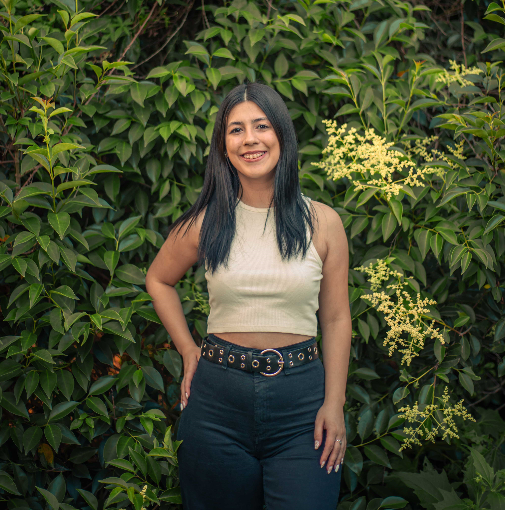
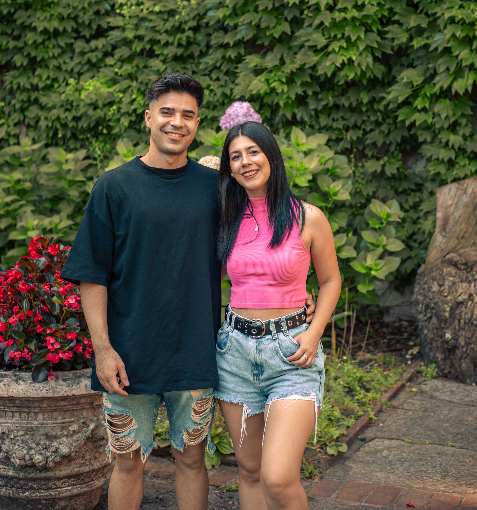

Sobre mi
¿Quien soy?
Mi nombre es Agostina Rodriguez. Vivo en Montevideo y tengo 24 años. Me encuentro en Fase 2 de Jovenes a Programar.
Desde chica, siempre me ha apasionado todo lo relacionado con la informática, lo que me llevó a formarme en este ámbito. Actualmente, soy analista en Marketing Digital y desde 2023 estoy estudiando desarrollo web.
En el ámbito profesional, siempre busco superarme y aprender cosas nuevas. Estoy comprometida con mi crecimiento personal y profesional, y me esfuerzo por estar al día con las últimas tendencias y tecnologías en mi campo.
Además, disfruto colaborando en equipos multidisciplinarios y aportando mi perspectiva para lograr resultados impactantes.

